공조냉동기계기사(구) (2004-08-08 기출문제)
1과목: 기계열역학
1. 이상기체의 내부에너지 및 엔탈피는?
- 압력만의 함수이다.
- 체적만의 함수이다.
- 온도만의 함수이다.
- 온도 및 압력의 함수이다.
(정답률: 58%)

2. 폐쇄계 내에 있는 포화액을 그 압력을 일정하게 유지하면서 열을 가하여 포화증기로 만들 경우 다음 사항 중 틀린것은?
- 온도가 증가한다.
- 건도가 1 이 된다.
- 비체적이 증가한다.
- 내부에너지가 증가한다.
(정답률: 43%)
3. 효율이 85 % 인 터빈에 들어갈 때의 증기의 엔탈피가 3390kJ/kg 이고, 가역 단열과정에 의해 팽창할 경우에 출구에서의 엔탈피가 2135 kJ/kg 이 된다고 한다. 운동에너지의 변화를 무시할 경우 이 터빈의 실제 일은 몇 kJ/kg 인가?
- 1476
- 1255
- 1067
- 906
(정답률: 58%)
4. 1 kg 의 헬륨이 1 atm 하에서 정압가열 되어 온도가 300K에서 350K 로 변하였을 때, 엔트로피(entropy)의 변화량은 몇 kJ/㎏. K 인가?(단, h = 5.238 T 의 관계를 갖는다. h 의 단위는 kJ/kg, T 의 단위는 K 이다.)
- 0.694
- 0.756
- 0.807
- 0.968
(정답률: 46%)
5. 온도가 150 ℃ 인 공기 3 kg 이 정압 냉각되어 엔트로피가 1.063 kJ/K 만큼 감소되었다. 온도 20 ℃ 인 공기로 방출시켜야 할 열량은 몇 kJ 인가?(단, 공기의 정압비열은 1.01 kJ/kg. ℃ 이다.)
- 379.4
- 715.0
- 27.2
- 538.7
(정답률: 40%)
6. 기체혼합물의 체적분석결과가 아래와 같을 때 이 데이터로부터 혼합물의 질량기준 기체상수(kJ/kg.K)를 구하면?(단, 일반기체상수
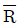
=8.314 kJ/kmol.K 이고, 원자량은 C = 12, O = 16, N = 14이다.) 물질 체적분율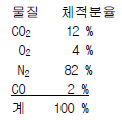
- 0.2764
- 0.3325
- 0.4628
- 0.5716
(정답률: 38%)
7. 어떤 냉장고에서 질량유량 80 kg/hr 의 냉매 R-134a 가 17kJ/kg 의 엔탈피로 증발기에 들어가 엔탈피 36 kJ/kg 가 되어 나온다. 이 냉장고의 용량은?
- 1220 kJ/hr
- 1800 kJ/hr
- 1520 kJ/hr
- 2000 kJ/hr
(정답률: 58%)
8. 10 냉동톤의 능력을 갖는 카르노 냉동기의 응축 온도가 25 ℃, 증발 온도가 -20 ℃ 이다. 이 냉동기를 운전하기 위하여 필요한 이론 동력은 몇 kW 인가?(단, 1 냉동톤은 3.85 kW 이다.)
- 6.85
- 4.65
- 2.63
- 1.37
(정답률: 54%)
9. 수은의 비중량과 밀도는 각각 대략 얼마인가?
- 13600 kg/m3, 133000 N/m3
- 133000 N/m3, 13600 kg/m3
- 13600 N/m3, 133000 kg/m3
- 133000 kg/m3, 13600 N/m3
(정답률: 30%)
10. 다음 상태량 중에서 강성적 상태량이 아닌 것은?
- 온도
- 비체적
- 압력
- 내부에너지
(정답률: 45%)
11. 온도 5 ℃ 와 35 ℃ 사이에서 작동되는 냉동기의 최대 성능계수는?
- 10.3
- 5.3
- 7.3
- 9.3
(정답률: 64%)
12. 다음 설명 중 틀린 것은?
- 오토사이클의 효율은 압축비(compression ratio)의 함수이다
- 오토사이클은 전기점화 내연기관의 기본이 되는 이상적인 사이클이다.
- 디젤사이클은 압축점화 내연기관의 기본이 되는 이상적인 사이클이다.
- 동일한 압축비에 대해서 디젤 사이클의 효율이 오토사이클의 효율보다 크다.
(정답률: 37%)
13. 이상기체 1kg을 300K, 100kPa 에서 500K 까지 "PVn= 일정" 의 과정(n =1.2)을 따라 변화시켰다. 기체의 비열비는 1.3, 기체 상수는 0.287 kJ/kg.K 라고 가정한다. 이 기체의 엔트로피 변화량은?
- -0.244 kJ/K
- -0.287 kJ/K
- -0.344 kJ/K
- -0.373 kJ/K
(정답률: 32%)
14. 이상 냉동 사이클의 자료가 다음과 같을 때 이 사이클의 성능계수(COP)는?
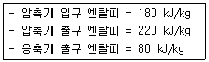
- 2.20
- 2.50
- 2.75
- 3.50
(정답률: 43%)
15. 물질이 액체에서 기체로 변해 가는 과정 중 포화에 관련된 다음 설명 중 잘못된 것은?
- 물질의 포화 온도는 주어진 압력 하에서 그 물질의 증발이 일어나는 온도이다.
- 물질의 포화 온도가 올라가면 포화 압력도 올라간다.
- 액체의 온도가 현재 압력에 대한 포화 온도보다 낮은 때 그 액체를 압축 액체 또는 과냉 액체라 한다.
- 어떤 물질이 포화 온도 하에서 일부는 액체로 그리고 일부는 증기로 존재할 때, 전체 질량에 대한 액체 질량의 비를 건도로 정의한다.
(정답률: 38%)
16. 열과 일에 대한 설명 중 맞는 것은?
- 열과 일은 경계현상이 아니다.
- 열과 일의 차이는 내부에너지만의 차이로 나타난다.
- 열과 일은 항상 양의 수로 나타낸다.
- 열과 일은 경로에 따라 변한다.
(정답률: 34%)
17. 상온의 감자를 가열하여 뜨거운 감자로 요리하였다. 감자의 에너지 변동 중 맞는 것은?
- 위치에너지가 증가
- 엔탈피 감소
- 운동에너지 감소
- 내부에너지가 증가
(정답률: 56%)
18. 실린더 내의 공기가 200 kPa, 10 ℃ 상태에서 600 kPa 이 될 때까지 "PV1.3 = 일정" 인 과정으로 압축된다. 공기의 질량이 3 kg 이라면 이 과정 중 공기가 한 일은?
- -23.5 kJ
- -235 kJ
- 12.5 kJ
- 125 kJ
(정답률: 44%)
19. 일정한 토크 100 Nm 가 걸린 상태에서 회전하는 축이 있다. 이 축을 50 회전시키는데 필요한 일은 얼마인가?
- 5.0 kW
- 5.0 kJ
- 31.4 kW
- 31.4 kJ
(정답률: 28%)
20. 증기터빈 발전소에서 터빈 입출구의 엔탈피 차이는 130kJ/kg이고 터빈에서의 열손실은 10 kJ/kg이었다. 이 터빈에서 얻을 수 있는 최대 일은 얼마인가?
- 10 kJ/kg
- 120 kJ/kg
- 130 kJ/kg
- 140 kJ/kg
(정답률: 50%)
2과목: 냉동공학
21. 다음 냉동장치의 여러 시험에 관한 기술중 타당한 것들로 이루어진 것은?
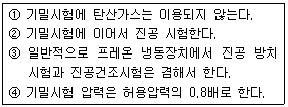
- ①,②,③
- ①,②
- ②,③
- ②,④
(정답률: 48%)
22. 절대압력 2.4kgf/cm2는 계기압력으로는 몇 kgf/㎝2인가? (단,대기압은 1.03kgf/㎝2이다.)
- 3.43
- 1.37
- 2.40
- 2.20
(정답률: 71%)
23. 냉동용 압축기의 압력이 게이지압력계로 각각 저압이 1㎏/㎝2이고,고압이 13.5㎏/㎝2일 때 압축비는 얼마인가?(단, 대기압은 1.0332㎏/㎝2 이다.)
- 6.15
- 7.15
- 12.5
- 13.5
(정답률: 83%)
24. 다음 중 압축기 과열운전의 원인은?
- 냉각수 과대
- 수온저하
- 냉매중 공기배제
- 압축기 흡입밸브 누설
(정답률: 78%)
25. 압축식 냉동기의 냉동능력이 15RT이다. 이에 적당한 개방식 냉각탑의 용량은 몇 ㎉/h 이면 되는가?
- 45360
- 49800
- 58500
- 99600
(정답률: 53%)
26. R - 12의 특성과 거리가 먼 것은?
- 암모니아 냉매보다 응고점이 극히 낮다.
- 동일 온도에 대한 포화압력이 암모니아 보다 상당히 낮다.
- 증기의 비체적이 암모니아 보다 크다.
- 물에 대한 용해도가 매우 적다.
(정답률: 41%)
27. 드라이어(Dryer)에 관한 사항 중 맞는 것은?
- 주로 프레온 냉동기보다 암모니아 냉동기에 사용된다
- 냉동장치내에 수분이 존재하는 것은 좋지 않으므로 냉매 종류에 관계없이 반드시 설치하여야 한다.
- 프레온은 수분과 잘 용해하지 않으므로 팽창밸브에서의 동결을 방지하기 위하여 설치한다.
- 건조제로는 황산, 염화칼슘 등의 물질을 사용한다.
(정답률: 64%)
28. 핫 가스(Hot gas)제상을 하는데 있어서 핫 가스의 흐름을 제어하는 장치 이름은?
- 자동 팽창밸브(AEV)
- 캐필러리 튜브(모세관)
- 솔레노이드 밸브(전자밸브)
- 3방향 밸브
(정답률: 79%)
29. 암모니아 냉동장치에서 제상 중 냉매분출에 의한 사고의 원인이 아닌 것은?
- 스톱밸브를 폐쇄하고 온수를 살수해서 내부에 이상고압 발생시
- 압축기 정지제상시 냉매의 과냉으로 응축기에 이상압력 상승시
- 고온가스 제상에서 완료시에 압력상승으로 내압성능이 열화된 곳이 파손되었을 때
- 고온가스 제상중 증발기에 다량의 냉매액이 고여서 재운전시 압축기에 액햄머가 발생되었을 때
(정답률: 64%)
30. 고속 다기통 압축기의 단점을 나타내었다. 다음 중 옳지 않은 것은?
- 윤활유의 소비량이 많다.
- 토출가스의 온도와 유온도가 높다.
- 압축비의 증가에 따른 체적효율의 저하가 크다.
- 수리가 복잡하며 부품은 호환성이 없다.
(정답률: 78%)
31. 냉동 부하가 일정할 때 계절의 변화에 따라 응축 능력의 변동이 가장 심한 응축기는 다음 중 어느 것인가?
- 증발식 응축기
- 대기식 응축기
- 2중관식 응축기
- 공냉식 응축기
(정답률: 69%)
32. 그림과 같은 사이클로 운전되는 R - 12 냉동장치가 있다. 이 장치의 실제 냉매순환량은 450㎏/h, 전동기 출력은 3.5㎾이라면 실제 성적계수는 얼마인가?
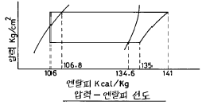
- 3.8
- 4.3
- 4.8
- 5.3
(정답률: 54%)
33. 암모니아 입형 저속 압축기에 많이 사용되는 포펫트 밸브 (Poppet vavle)에 관한 설명으로 틀린 것은?
- 구조가 튼튼하고 파손되는 일이 적다.
- 회전수가 높아지면 밸브의 관성 때문에 개폐가 자유롭지 못하다.
- 가스통과 속도는 40m/s 정도이다.
- 중량이 가벼워 밸브 개폐가 불확실하다.
(정답률: 67%)
34. 물체간의 온도차이에 의한 열의 이동현상을 열전도라 한다.이 과정에서 전달되는 열량을 올바르게 설명한 것은?
- 단면적에 반비례한다.
- 열전도계수에 반비례한다.
- 온도차에 반비례한다.
- 경로의 길이에 반비례한다.
(정답률: 84%)
35. 3kg/cm2 암모니아 포화액의 엔탈피가 88(㎉/㎏),건조포화 증기의 엔탈피가 385.5(㎉/㎏), 팽창밸브 직전액의 엔탈피가 138㎉/㎏이고 팽창밸브에서 압력3kg/cm2 까지 팽창시 킬 때 이 냉매액이 팽창밸브를 지나 증발기로 들어갈 때 액은 중량비로 약 몇% 인가?
- 15.7%
- 61.7%
- 83.2%
- 91.4%
(정답률: 62%)
36. R-12 수냉식 응축기에서 응축온도가 40℃, 증발온도가 -20℃,응축기 냉각수 입구온도가 30℃,냉각수 출구온도가 36℃,냉동능력 12RT,압축동력은 18㎾일 때 이 응축기에 필요한 수량은 얼마인가?
- 124ℓ /min
- 134ℓ /min
- 144ℓ /min
- 154ℓ /min
(정답률: 67%)
37. 온도식 팽창밸브(T.E.V)는 3가지 압력에 의해 작동되는데 다음 중 해당되지 않은 것은?
- 흡입관의 압력
- 증발기의 증발압력
- 감온통의 다이어프램 압력
- 과열도조절 스프링의 압력
(정답률: 69%)
38. 응축압력 및 증발압력이 일정할 때 압축기의 흡입증기 과열도가 크게 된 경우의 설명중 바른 것은?
- 증발기의 냉동효과는 증대한다.
- 냉매순환량이 증대한다.
- 압축기의 토출가스 온도가 상승한다.
- 압축기의 체적효율은 변하지 않는다.
(정답률: 72%)
39. 다음은 터보냉동기의 용량제어 방법이다. 이 중에서 에너지 절약상 가장 효과적인 방법은?
- 핫 가스 바이패스(hot gas by-pass) 제어법
- 흡입 베인에 의한 제어법
- 흡입 댐퍼에 의한 제어법
- 회전속도 제어법
(정답률: 74%)
40. 다음 중 흡수식 냉동기에서 성능향상과 관계 없는 것은?
- Pump
- Analyzer
- Rectifier
- Heat exchanger
(정답률: 43%)
3과목: 공기조화
41. 보일러의 상용 출력은?
- 난방부하 + 급탕부하 + 예열부하
- 난방부하 + 급탕부하 + 배관부하
- 난방부하 + 급탕부하 + 배관부하 +예열부하
- 난방부하 + 배관부하 + 예열부하
(정답률: 65%)
42. 다음 중 바이패스 팩터가 작아지는 경우는?
- 코일 통과풍속을 크게 할 때
- 전열면적이 작을 때
- 코일의 열수가 증가 할 때
- 코일의 간격이 클 때
(정답률: 75%)
43. 아파트의 바닥난방에 관한 기술로서 부적당한 것은?
- 실내온도를 일정수준까지 상승시키는데는 비교적 장 시간이 요구된다.
- 난방효과는 바닥면의 복사에 의한다.
- 배관에 증기를 순환시킨다.
- 바닥에 신더 콘크리이트를 타설하고 배관한다.
(정답률: 72%)
44. 다음 용어의 조합 중 틀린 것은?
- 인체의 발생열 - 현열, 잠열
- 극간풍에 의한 열량 - 현열, 잠열
- 조명부하 - 현열, 잠열
- 외기 도입량 - 현열, 잠열
(정답률: 83%)
45. 주철 보일러의 단점이 아닌 것은?
- 고압증기를 얻을 수 없다.
- 효율이 노통연관 보일러보다 약간 낮다.
- 대형이므로 반입시에 난점이 많다.
- 대능력의 것이 많다.
(정답률: 70%)
46. 다음 중 공기조화에 있어서 실내(사무실)조건으로 적당한 것은?
- 여름 : 26℃, 20% 겨울 : 26℃, 50%
- 여름 : 22℃, 50% 겨울 : 25℃, 20%
- 여름 : 26℃, 50% 겨울 : 22℃, 50%
- 여름 : 22℃, 20% 겨울 : 24℃, 50%
(정답률: 70%)
47. 고속덕트의 특징으로 옳지 않은 것은?
- 소음이 작다.
- 마찰에 의한 압력손실이 크다.
- 장방형 대신에 스파이럴 관이나 원형덕트를 사용하는 경우가 있다.
- 운전비가 높아진다.
(정답률: 73%)
48. 난방시 빌딩의 1층 현관을 통하여 침입해 들어오는 침입 외기에 의한 영향을 줄이기 위한 방법으로 부적당한 것은?
- 회전문을 설치한다.
- 출입구에 자동개폐문을 설치한다.
- 에어커튼을 설치한다.
- 이중문의 중간에 강제대류 컨벡터를 설치한다.
(정답률: 78%)
49. 덕트의 확대 및 축소에 관한 다음 기술중 적당한 것은?
- 확대부분은 압력손실을 적게하기 위해 30° 이하로 한다
- 저속덕트의 축소부분은 압력손실을 적게하기 위해 15° 이하로 한다
- 엘보부분의 압력손실을 적게하고 편류를 방지하기 위해 곡률반경은 크게하고 터닝 베인(TV)을 설치한다
- 덕트계통의 가열코일 전단의 확대부분은 각도에 관계없이 견고히 접속한다
(정답률: 60%)
50. 외기온도 5℃,상대습도 50%인 공기를 온도 18℃,상대습도 60%인 공기로 조화하여 실내로 공급하는 장치가 있다. 공기는 먼저 예열기에 의하여 가열되고 물을 세정기에서 분사하여 60%의 습도가 되도록 한 다음 마지막으로 가열기에 의해 18℃로 가열한다. 대기의 압력을 760㎜Hg라 할때 세정기에서 가습되는 물의 양은 얼마인가? (단,18℃에서 포화수증기 분압은 15.47㎜Hg, 5℃에서 포화수증기 분압은 6.54㎜Hg 이다.)
- 0.003㎏/㎏'
- 0.004㎏/㎏'
- 0.0⑤㎏/㎏'
- 0.006㎏/㎏'
(정답률: 23%)
51. 다음 설명 중 옳은 것은?
- 잠열은 0℃의 물을 가열하여 100℃의 증기로 변할 때까지 가하여진 열량이다.
- 잠열은 100℃의 물이 증발하는데 필요한 열량으로서 증기의 압력과는 관계없이 일정하다.
- 임계점에서는 물과 증기의 비체적이 같다.
- 증기의 정적비열은 정압비열보다 항상 크다.
(정답률: 85%)
52. 취출구에서 실내로 취출되는 공기를 1차공기, 실내에 있던 공기 중에서 취출공기와 혼합되는 공기를 2차공기라 한다. 이 때, 유인비 표시로 맞는 것은?
- 1차공기량 / (1차공기량 + 2차공기량)
- 2차공기량 / (1차공기량 + 2차공기량)
- (1차공기량 + 2차공기량) / 1차공기량
- (1차공기량 + 2차공기량) / 2차공기량
(정답률: 62%)
53. 습공기를 가습하는 방법 중 가장 타당하지 않는 것은?
- 순환수를 분무하는 방법
- 온수를 분무하는 방법
- 수증기를 분무하는 방법
- 외부공기를 가열하는 방법
(정답률: 87%)
54. 엔탈피 12㎉/㎏ 인 공기를 냉수코일을 이용하여 엔탈피 10㎉/㎏까지 냉각제습 하고자 한다.이때 코일 입출구의 온도차를 5℃로 할때 냉수순환 펌프의 수량은 얼마인가? (단,코일 통과풍량 6000m3/h,공기의 비체적은 0.835m3/㎏이다.)
- 0.80 (ℓ /min)
- 47.9 (ℓ /min)
- 63.4 (ℓ /min)
- 73.8 (ℓ /min)
(정답률: 48%)
55. 다음 그림은 냉방의 한 과정이다. 설명 중 틀린 것은?
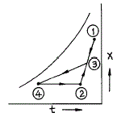
- ①은 신선외기의 상태이다.
- ③은 외기와 실내공기의 혼합점이다.
- ③ → ④의 과정은 냉각감습과정이다.
- ②의 상태는 공조기의 출구상태점이다.
(정답률: 67%)
56. 저압증기난방 배관에 관한 내용이다. 옳게 설명된 것은?
- 하향공급식의 경우에는 상향공급식의 경우보다 배관경이 커야 한다.
- 상향공급식의 경우에는 하향공급식의 경우보다 배관경이 커야 한다
- 상향공급식이나 하향공급식은 배관경과 무관하다
- 하향공급식의 경우 상향공급식보다 워터햄머을 일으키기 쉬운 배관법이다.
(정답률: 62%)
57. 보일러에서 화염이 없어지면 화염검출기가 이를 감지하여 연료공급을 즉시 정지시키는 형태의 제어는?
- 시퀀스 제어
- 피드백 제어
- 인터록 제어
- 수면 제어
(정답률: 70%)
58. 온수관의 온도가 80 ℃, 환수관의 온도가 60 ℃인 자연순환식 온수난방장치에서의 자연순환수두는 얼마인가?(단, 보일러에서 방열기까지의 높이는 5 m, 60 ℃에서의 온수 밀도는 983.24 kg/m3, 80 ℃에서의 온수 밀도는 971.84 kg/m3이다.)
- 55 mmAq
- 56 mmAq
- 57 mmAq
- 58 mmAq
(정답률: 48%)
59. 건축구조체의 열통과율에 대한 다음 설명 중 가장 옳은 것은?
- 열통과율은 구조체 표면 열전달 및 구조체내 열전도율에 대한 열이동의 과정을 총합한 계수를 말한다.
- 표면 열전달 저항이 커지면 열통과율도 커진다.
- 수평구조체의 경우 상향열류가 하향열류보다 열통과율이 작다.
- 각종 재료의 열전도율은 대부분 함습율의 증가로 인하여 열전도율이 작아진다.
(정답률: 77%)
60. 원심송풍기의 풍량제어 방법 중 옳지 않은 것은?
- 송풍기의 회전수 변화에 의하는 방법
- 흡입구에 설치한 베인에 의하는 방법
- 날개수 변화에 의하는 방법
- 토출 덕트에 설치한 댐퍼에 의하는 방법
(정답률: 48%)
4과목: 전기제어공학
61. 유기 기전력이 제3고조파를 포함하면 중성점접지인 경우 통신선에 장해를 주며, 부하가 평형되어도 중성선에 고조파 전류분이 흘러 과열된다. 이런 이유로 고조파를 많이 발생하는 인버터나 컨버터, 대용량의 전등 변압기 부하에서는 이 결선 방법을 피하여야 하는데 이 결선방법은?
- △-△결선
- Y-Y결선
- V-V결선
- △-Y결선
(정답률: 18%)
62. 콘덴서의 전위차와 축적되는 에너지와의 관계를 그림으로 나타내면 어떤 그림이 되는가?
- 직선
- 타원
- 쌍곡선
- 포물선
(정답률: 57%)
63. 주로 공업용 계측분야에서 변위, 속도, 가속도, 압력, 열, 빛 등 물리량의 계측에 이용되는 요소는?
- 회로시험기
- 변환검출기
- 추적레이더
- 인버터
(정답률: 40%)
64. 입력 A 와 B 가 동시에 주어질 때 출력 F 가 생기는 판단 기능이 있는 직렬 논리회로는?
- AND 회로
- OR 회로
- NOR 회로
- NOT 회로
(정답률: 45%)
65. 논리식
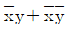
를 간단히 하면?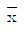
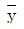
- x+y
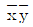
(정답률: 53%)
66. 정현파 전압 v=220√2 sin(ωt+30° )[V]보다 위상이 90도 뒤지고 최대값이 20A인 정현파 전류의 순시값은 몇 A 인가?
- 20sin(ωt-30° )
- 20√2 sin(ωt+60° )
- 20sin(ωt-60° )
- 20√2 sin(ωt-60° )
(정답률: 43%)
67. 온도, 유량, 압력 등의 공업프로세스 상태량을 제어량으로 하는 제어계로서 프로세스에 가해지는 외란의 억제를 주된 목적으로 하는 것은?
- 비율제어
- 프로그램제어
- 정치제어
- 프로세스제어
(정답률: 27%)
68. 제어요소는 동작신호를 무엇으로 변환하는 요소인가?
- 조작량
- 제어량
- 비교량
- 검출량
(정답률: 40%)
69. 전류에 의해서 일어나는 작용이라고 볼 수 없는 것은?
- 발열 작용
- 자기차폐 작용
- 화학 작용
- 자기 작용
(정답률: 55%)
70. 그림과 같은 브리지 정류회로는 어느 점에 교류입력을 연결하여야 하는가?
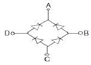
- A-B점
- A-C점
- B-C점
- B-D점
(정답률: 48%)
71. 목표값이 미리 정해진 시간적 변화를 하는 경우 제어량을 그것에 추종시키기 위한 제어는?
- 시퀀스제어
- 정치제어
- 비율제어
- 프로그래밍제어
(정답률: 45%)
72. 전압을 인가하여 전동기가 동작하고 있는 동안에 교류 전류를 측정할 수 있는 계기는?
- 클램프 테스터(clamp tester)
- 회로시험기(multi tester)
- 절연저항계
- 휘이트스토운브리지
(정답률: 37%)
73. 인공위성을 추적하는 RADAR의 제어는?
- 프로세스제어
- 서보제어
- 자동조정제어
- 프로그램제어
(정답률: 45%)
74. 그림과 같이 출력이 입력신호의 적분값에 비례하는 요소에 해당하는 전달함수는?
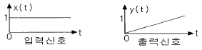
- G(S)=K
- G(S)=KS
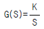
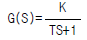
(정답률: 24%)
75. 그림과 같은 회로에서 a, b 단자에 200V를 가할 때 저항2Ω에 흐르는 전류 Ｉ1 의 값은 몇 A 인가?
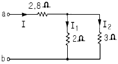
- 20
- 30
- 40
- 50
(정답률: 39%)
76. 피드백 제어시스템의 피드백 효과가 아닌 것은?
- 오차의 경감
- 안정도
- 전체 이득
- 입력신호
(정답률: 28%)
77. 정격주파수 60Hz의 농형 유도전동기를 1차 전압을 정격값으로 하고 50Hz에 사용할 때 감소하는 것은?
- 온도
- 토크
- 역률
- 여자전류
(정답률: 28%)
78. 목표값을 직접 사용하기 곤란할 때 어떤 것을 이용하여 주되먹임 요소와 비교하여 사용하는가?
- 기준입력요소
- 제어요소
- 되먹임요소
- 비교장치
(정답률: 44%)
79. 5마력, 20rps인 유도전동기의 토크는 약 몇 kg·m 인가?
- 0.24
- 3.03
- 179.15
- 181.83
(정답률: 29%)
80. △ 결선된 3상 평형회로에서 부하 1상의 임피던스가 40 + j30Ω 이고 200V의 전원전압일 때 선전류는 몇A 인가?
- 4
- 4√3
- 5
- 5√3
(정답률: 35%)
5과목: 배관일반
81. 주철관의 일반적인 사항에 해당되지 않는 것은?
- 주철관은 지하 매설관에 적합하다
- 주철관은 인성이 풍부하여 나사이음과 용접이음에 적합하다
- 주철관의 용도는 수도, 배수, 가스용으로 사용한다
- 주철관의 제조방법은 수직법과 원심력법이 있다
(정답률: 40%)
82. 증기사용 간접 가열식 온수공급 탱크의 가열관으로 어느 것이 가장 좋은가?
- 납관
- 주철관
- 동관
- 스테인레스강관
(정답률: 30%)
83. 과열증기를 사용한 후 포화증기를 재 가열하여 열효율을 높이는 장치는?
- 과열기
- 재열기
- 절탄기
- 공기 예열기
(정답률: 35%)
84. 옥상 탱크의 설치 높이는 건물의 최고층에서 탱크로부터 가장 먼 장소에 있는 세정 밸브에 걸리는 압력을 고려하여야 한다. 세정밸브에 필요한 압력은 몇 kg/cm2이상의 수압을 유지하여야 하는가?
- 0.3kg/cm2
- 0.5kg/cm2
- 0.7kg/cm2
- 1.0kg/cm2
(정답률: 25%)
85. 다음의 각 항목은 관의 설계순서 중의 각 항목이다. 올바른 설계 순서는?
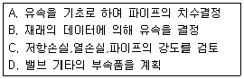
- A-B-C-D
- B-A-D-C
- C-D-A-B
- D-C-B-A
(정답률: 40%)
86. 팽창수조에 대한 설명이다. 틀린 것은?
- 개방식팽창수조의 설치높이는 장치의 최고 높은 곳에서 1m 이상으로 한다.
- 팽창관에는 밸브을 설치하여야 한다.
- 팽창수조는 물의 팽창· 수축을 흡수하기 위한 장치이다.
- 밀폐식 팽창수조는 온도 100℃ 이상의 고온수 배관계에 이용한다.
(정답률: 53%)
87. 역류형 열교환기에서 1차측 입구온도를 t1℃, 출구온도를 t2℃, 2차측 입구온도를 t3℃, 출구온도를 t4℃라고 할 때 대수평균온도차는 어떻게 나타낼 수 있는가?
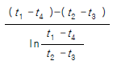
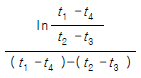
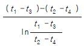
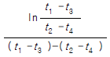
(정답률: 31%)
88. 강제순환식 급탕설비에서 순환펌프에 관한 설명이 옳은 것은?
- 장치내 배관의 마찰저항손실을 이길 수 있는 저양정 펌프를 사용한다.
- 펌프용량에 비하여 취급수량이 극히 적다.
- 급탕관(공급관)과 반탕관(반환관)사이에 설치한다.
- 왕복동펌프, 터빈펌프, 분사펌프 등이 주로 사용된다
(정답률: 12%)
89. 스트레이너의 형상에 따른 종류가 아닌 것은?
- Y형
- S형
- U형
- V형
(정답률: 35%)
90. 직경 300㎜인 철관에 3㎧의 속도로 물이 흐를 때 관의 길이 150m에서의 마찰손실수두는? (단, 마찰계수 f는 0.03이다.)
- 6.89m
- 7.52m
- 9.13m
- 12.6m
(정답률: 27%)
91. 통기관의 설치 목적 중 가장 적합한 것은?
- 배수의 유속을 조절한다
- 배수 트랩의 봉수를 보호한다
- 배수관 내의 진공을 완화한다
- 배수관 내의 청결도를 유지한다
(정답률: 54%)
92. 간접 가열식 급탕법의 설명이다. 잘못된 것은?
- 대규모 급탕설비에 부적당하다.
- 순환증기는 높이에 관계없이 저압으로 가능하다.
- 저탕탱크와 가열용 코일이 설치되어 있다.
- 난방용 증기보일러가 있는 곳에 설치하면 설비비를 절약하고 관리가 편하다.
(정답률: 23%)
93. 강관이나 동관의 이음에 적용되고 있는 그루브이음(groove joint)의 장점을 설명한 것 중에서 거리가 가장 먼 것은?
- 돌기부(突起部)가 없으므로 배관상의 공간효율이 좋고, 중량도 비교적 가볍다.
- 팽창과 수축, 굽힘 등에 유연성이 있다.
- 소음과 진동을 흡수할 수 있다.
- 이음부위의 분해ㆍ조립이 간편하며, 이음부위가 유니언과 같은 역할을 한다.
(정답률: 6%)
94. 방열량이 2500 kcal/h인 방열기에 공급하여야 하는 온수량은 얼마인가?(단, 방열기 입구온도 80℃, 출구온도 70℃, 온수 평균 온도의 물의 비열 1.002kcal/㎏℃, 물의 밀도 977.5㎏/m3이다.)
- 0.002 m3/h
- 0.025 m3/h
- 0.2552 m3/h
- 250 m3/h
(정답률: 48%)
95. 다음 중 유체의 종류가 기름을 표시하는 문자는?
- G
- A
- O
- V
(정답률: 47%)
96. 냉온수 배관 관경 결정시 가장 일반적으로 사용하는 방법은?
- 등속법
- 균활법
- 등마찰법
- 정압재취득법
(정답률: 25%)
97. 인탈산 동관에 대한 설명중 맞지 않는 것은?
- 고온에서 수소취화 현상이 발생한다.
- 전기 전도성이 우수하다.
- 굴곡선이 좋다.
- 공기조화 장치 배관에 많이 사용된다.
(정답률: 32%)
98. 다음 도시기호의 이음은?
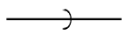
- 나사 이음
- 용접 이음
- 턱걸이 이음
- 플랜지 이음
(정답률: 24%)
99. 증기난방 방식을 온수난방 방식과 비교하여 장점이 아닌것은?
- 예열시간이 짧다.
- 한냉지에서 동결의 우려가 적다.
- 용량제어가 용이하다.
- 방열기 방열면적이 적다.
(정답률: 30%)
100. 관 지지구 중 행거의 종류에 속하지 않는 것은?
- 콘스탄트 행거
- 브레이스 행거
- 리지트 행거
- 스프링 행거
(정답률: 42%)